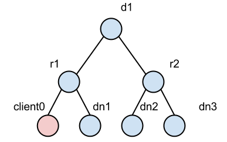

| Pivotal HD / Stack and Tools Reference | |
Pivotal HD is a full Apache Hadoop distribution with Pivotal add-ons and a native integration with the Pivotal Greenplum database.
HDFS rack awareness is a key feature to achieve localized I/O (locality).
With respect to read and write separately, HDFS has:
Both operations need to reference network topology, which is managed by the rack awareness feature. The rack awareness feature includes:
The problem of the current implementation is that it does not support off-cluster clients. The figure below is an example of off-cluster clients:

In this figure, node dn1 is a datanode and its network location is /d1/r1, and so on for dn2 and dn3. Node client0 is an off-cluster node, which means there is no datanode deployed on client0. In this case, client0 has no chance to register itself in the topology tree of the namenode. Therefore, both read and write operations select random nodes even though dn1 is closer (more preferable) than either dn2 or dn3. This problem will cause performance issues in the following cases:
To tackle this problem, we changed the logic in the block placement policy and the block pseudo distance sort. We also resolved the network location of the client.
Resolving client location
Resolving the client location: we reused the framework that resolves datanodes. However, since we did not add client network locations into the topology tree (as explained below), we have to cache client locations to avoid unnecessary resolve operations.
As a result, we introduced two LRU caches:
Referring to the diagram of ignored off-cluster clients, the table below lists some examples of location cache.
|
Location Cache Examples |
||
|
HostName |
Location |
Cache |
|
client1 |
d1/r1 |
white list |
|
client2 |
d2/r1 |
black list |
|
client3 |
null |
black list |
The size of the LRU cache is configurable, so you can limit the memory usage of namenode.
Block placement policy
The tables below demonstrate how the BlockPlacementPolicy has been changed to support non-datanode clients.
|
Former block placement algorithm |
|
|
Replica |
Rule |
|
1 |
Client Local |
|
2 |
Random node whose rack is different from replica 1 |
|
3 |
Random node who share the same rack with replica 2 |
|
>=4 |
Random node |
|
Changed block placement algorithm |
|
|
Replica |
Rule |
|
1 |
Client Local if client is datanode, or a random node that shares the same rack with client, if client is not a datanode |
|
2 |
Random node whose rack is different from replica 1 |
|
3 |
Random node who shares the same rack with replica 2 |
|
>=4 |
Random node |
The client rack aware feature is disabled by default. To enable, add the following to the hdfs-site.xml file:
<properties> <property> <name>dfs.rackawareness.with.client</name> <value>true</value> </property> </properties> <properties> <property> <name>dfs.rackawareness.with.client.blacklist.size</name> <description>Black list size of client cache, 5000 by default.</description> <value>5000</value> </property> </properties> <properties> <property> <name>dfs.rackawareness.with.client.cache.size</name> <description>White list size of client cache, best set it equals the size of cluster. 2000 by default.</description> <value>2000</value> </property> </properties>
Vaidya is a diagnostic tool installed with PHD for Map/Reduce jobs. After a job is executed successfully, it uses a job history log and the job configuration information to identify any performance or scalability problems with the job. Upon execution, it provides a job analysis report indicating specific problems with the job, along with the remedy to correct them. The report element includes, "rule title", "rule description", "rule importance", "rule severity", "reference details" and "remedy/prescription" to rectify the problem. The "rule severity", is a product of rule impact and the rule importance.
Note: The Vaidya tool does not analyze failed jobs, either for performance or scalability problems, nor for the reason for failures.
The Vaidya tool includes diagnostic rules (also referred to as "tests") where each rule analyzes a specific problem with the M/R job. A diagnostic rule is written as a Java class and captures the logic of how to detect a specific problem condition with the M/R job. Each diagnostic rule uses the job history log and job configuration information provided to it using a standard structured interface. The standard interface allows administrators and developers to independently add more diagnostic rules in the Vaidya tool.
By default, Vaidya files are installed at:
On the history server node, go to the PHD configuration folder (by default, /etc/gphd/hadoop/conf), and add the following lines into the mapred-site.xml file.
Restart the job history server service to ensure the change takes effect.
mapred-site.xml Structure
<property> <name>mapreduce.vaidya.enabled</name> <value>true</value> </property> <property> <name>mapreduce.vaidya.jarfiles</name> <value>/usr/lib/gphd/hadoop-mapreduce/hadoop-vaidya.jar</value> </property> <property> <name>mapreduce.vaidya.testconf.file</name> <value>/etc/gphd/hadoop/conf/postex_diagnosis_tests.xml</value> </property>
To disable Vaidya:
Set the mapreduce.vaidya.enabled property value to false, or remove these lines from mapred-site.xml:
http://<historyserver_host>:<historyserver_port>/jobhistory
Where:
After you installed Vaidya with PHD, rules configuration is installed as a postex_diagnosis_tests.xml file in /etc/gphd/hadoop/conf.
You can find all rules to be run on a selected job in this file, where each rule is defined as an XML PostExPerformanceDiagnosisTests/DiagnosticTest element.
For example, a rule in postex_diagnosis_tests.xml:
<DiagnosticTest> <Title><![CDATA[Balanced Reduce Partitioning]]></Title> <ClassName> <![CDATA[org.apache.hadoop.vaidya.postexdiagnosis.tests.BalancedReducePartitioning]]></ClassName> <Description><![CDATA[This rule tests as to how well the input to reduce tasks is balanced]]></Description> <Importance><![CDATA[High]]></Importance> <SuccessThreshold><![CDATA[0.40]]></SuccessThreshold> <Prescription><![CDATA[advice]]></Prescription> <InputElement> <PercentReduceRecords><![CDATA[85]]></PercentReduceRecords> </InputElement> </DiagnosticTest>
The Title and Description elements provide a brief summary about what this rule is doing.
By editing postex_diagnosis_tests.xml, you can configure the rules.
Comment out or remove the entire <DiagnosticTest> element.
Importance indicates how relatively important a rule is, relative to other rules in the same set. You can change the importance value by editing the <Importance> element in the XML file. A level serves as a factor, which is multiplied to impact the value returned by each rule.
There are three values valid for this attribute: Low (value of 0.33), Medium (value of 0.66), and High (value of 0.99).
In the displayed Vaidya report, there is a value named Severity for each rule. A severity level is the result of multiplying the impact value (returned by rule) and the importance factor (defined in the XML file).
For example, a rule returns an impact of 0.5, its importance is marked as Medium, then its severity is 0.5 * 0.66 = 0.33.
Each rule calculates a value between 0 and 1 (inclusively) to indicate how healthy a job is according to the specified rule; this value is called impact. The smaller the impact is (that is, closer to 0), the healthier the job is.
To give a more straightforward result, you can set a threshold for each rule. Therefore, a rule whose impact value is larger than the threshold will be marked as "failed"; otherwise, it is marked as "passed".
Note that the threshold is compared with the impact value, rather than severity (which means making a rule less important will not make a failed rule succeed).
You can change the threshold value by editing the <SuccessThreshold> element in the XML file.
Some rules might need additional input parameters to complete their logic. You can specify additional parameters by editing/adding elements under the <InputElement> element of each rule.
For a full explanation and instructions about the meaning of each XML element, as well as how to change them, see Apache's documentation (https://hadoop.apache.org/docs/stable1/vaidya.html) for more information.
A Vaidya rule consists of the following two parts:
myrule.java
package com.greenplum.vaidya.rules;
import org.apache.hadoop.vaidya.DiagnosticTest;
import org.apache.hadoop.vaidya.statistics.job.JobStatistics;
public class MyRule extends DiagnosticTest {
@Override
public String getReferenceDetails() {
return "";
}
@Override
public String getPrescription() {
return "";
}
@Override
public double evaluate(JobStatistics jobStatistics) {
return 0.5;
}
}
Add a DiagnosticTest element into the postex_diagnosis_tests.xml file (the file you set in the mapred-site.xml file), according to the sample given in the configuration part. Ensure the value of the <ClassName> element is set to be the full class name of the java rule class you just created.
mapred-site.xml <property> <name>mapreduce.vaidya.jarfiles</name> <value>/usr/lib/gphd/hadoop-mapreduce/hadoop-vaidya.jar:/usr/lib/gphd/hadoop-mapreduce/lib/myrule.jar</value> </property>
Hadoop Virtualization Extensions (HVE) allow Hadoop clusters implemented on virtualized infrastructure full awareness of the topology on which they are running, thus enhancing the reliability and performance of these clusters.
HVE should be enabled in the following situations:
Sample Setup:
This setup has 2 logical racks, 2 physical hosts (installed by ESXi and managed by vCenter) per rack, and 2 DN/NM (VM in ESXi) nodes per host. There is also one NameNode/ResourceManager and a client node that can be used to start jobs.
In this setup, each DN/NM node has 4 vCPUs, 16G memory, and 200G (Non-SSD) disks.
The NameNode and ResourceManager are installed on another dedicated VM with 4vCPU, 4G Memory and 100G disks.
Node Distribution on Hosts:
| Rack 1 | Host 1 | NameNode and ResourceManager | DN1 |
| Host 2 | DN2 | DN3 | |
| Rack 2 | Host 3 | DN4 | DN5 |
| Host 4 | DN6 | DN7 |
Enable topology awareness (Hadoop V2):
<property> <name>topology.script.file.name</name> <value>/hadoop/hadoop-smoke/etc/hadoop/topology.sh</value<!-- point to topology.sh location.--> </property> <property> <name>net.topology.impl</name> <value>org.apache.hadoop.net.NetworkTopologyWithNodeGroup</value> <description> The default implementation of NetworkTopology which is classic three layer one. </description> </property> <property> <name>net.topology.nodegroup.aware</name> <value>true</value> <description> By default, network topology is not aware of nodegroup layer. </description> </property> <property> <name>dfs.block.replicator.classname</name> <value>org.apache.hadoop.hdfs.server.blockmanagement.BlockPlacementPolicyWithNodeGroup</value> <description> The default implementation of ReplicationTargetChooser. </description> </property>
<property>
<description>The class to use as scheduled requests.</description>
<name>yarn.resourcemanager.scheduled.requests.class</name>
<value>org.apache.hadoop.mapreduce.v2.app.rm.ScheduledRequestsWithNodeGroup</value>
</property>
<property>
<description> The boolean value to identify if the cluster is deployed
on an environment which needs an additional layer (node group) between node
and rack for network topology.
</description>
<name>net.topology.with.nodegroup</name>
<value>true</value>
</property>
<property>
<description>The class to use as AbstractSchedulerElementsFactory in RM scheduler.
</description>
<name>yarn.resourcemanager.scheduler.elements.factory.impl</name>
<value>org.apache.hadoop.yarn.server.resourcemanager.scheduler.
SchedulerElementsFactoryWithNodeGroup</value>
</property>
Topology.data sample:
[root@namenode enable]# cat topology.data 10.111.57.223(VM IP) /Rack1/NodeGroup1 10.111.57.224 /Rack1/NodeGroup1 10.111.57.225 /Rack1/NodeGroup2 10.111.57.226 /Rack2/NodeGroup1 10.111.57.227 /Rack2/NodeGroup1 10.111.57.228 /Rack2/NodeGroup2 10.111.57.229 /Rack2/NodeGroup2
Topology.sh sample:
[root@namenode enable]# cat topology.sh
#! /bin/bash
HADOOP_CONF=/hadoop/hadoop-smoke/etc/hadoop
# this is the location of topology.data
while [ $# -gt 0 ] ; do
nodeArg=$1
exec< ${HADOOP_CONF}/topology.data
result=""
while read line ; do
ar=( $line )
if [ "${ar[0]}" = "$nodeArg" ] ; then
result="${ar[1]}"
fi
done
shift
if [ -z "$result" ] ; then
echo -n "/default/rack "
else
echo -n "$result "
fi
done
Run the TestDFSIO script. The output is as follows:
1)HVE enabled: Job Counters Launched map tasks=100 Launched reduce tasks=1 Data-local map tasks=26 NODEGROUP_LOCAL_MAPS=49 Rack-local map tasks=25 2)HVE disabled: Job Counters Launched map tasks=100 Launched reduce tasks=1 Data-local map tasks=20 Rack-local map tasks=80
HVE Elastic Resource Extension enables the adaption of MapReduce tasks to changing resources on nodes/clusters where Hadoop clusters are deployed to virtualized environments, by sharing resources with VMs from other clusters or applications.
Currently, the Hadoop resource model is static at the node level, assuming the node resources are not changed while the cluster is running. This design and implementation are based on an assumption that all cluster resources are dedicated for Hadoop MapReduce jobs, so they are fully available at all times. This assumption does not hold when users want to deploy multiple applications on the same cluster, e.g. deploying HBase and MapReduce on the same HDFS cluster. In particular, in an era of cloud computing, it is common for Hadoop clusters to be deployed on virtualized environments by sharing resource with VMs from other clusters or applications.
The HVE elastic resource feature addresses scenarios in which nodes' resources are possibly changed, so that scheduling of MapReduce tasks on these nodes can adapted to changing resources.
With this feature, APIs (CLI and JMX interface) and script tools are provided to get/set resources (memory, v-cores) on Hadoop cluster nodes for MR jobs.
Below are functionalities included in this elastic feature:
| Function | Description |
|---|---|
|
Configuration |
Enable/disable elastic resource feature on Hadoop cluster by specifying a configuration property when starting MR cluster. |
| List nodes' status |
List the status of all the nodes or nodes specified by user. The node status including its memory resource, v-core resource, hostname, health status, etc. |
| Set resource capacity in Node Manager node | Set resource capacity (memory, v-cores) of Node Manager to a node specified by user via CLI or JMX interface. |
To enable elastic resources, make the following changes to the Hadoop configuration.
In yarn-site.xml, add the following property to enable the elastic resource feature:
<property> <name>yarn.dynamic.resource.enable</name> <value>true</value> </property>
yarn rmadmin
[-refreshQueues]
[-refreshNodes]
[-refreshUserToGroupsMappings]
[-refreshSuperUserGroupsConfiguration]
[-refreshAdminAcls]
[-refreshServiceAcl]
[-getGroups [username]]
[-updateNodeResource [NodeID][MemSize][Cores]]
[-help [cmd]]
yarn node
-all Works with -list to list all nodes.
-list List all running nodes. Supports optional use of
-states to filter nodes based on node state, all -all
to list all nodes.
-states <States> Works with -list to filter nodes based on input
comma-separated list of node states.
-status <NodeId> Prints the status report of the node.
yarn node -list -all
List all nodes:
yarn node -list -all
Total Nodes:8
Node-Id Node-State Node-Http-Address Number-of-Running-Containers
hdsh2-a172.lss.emc.com:37804 RUNNING hdsh2-a172.lss.emc.com:8042 0
hdsh2-a173.lss.emc.com:45310 RUNNING hdsh2-a173.lss.emc.com:8042 0
hdsh2-a159.lss.emc.com:60596 RUNNING hdsh2-a159.lss.emc.com:8042 0
hdsh2-a158.lss.emc.com:51694 RUNNING hdsh2-a158.lss.emc.com:8042 0
hdsh2-a157.lss.emc.com:37348 RUNNING hdsh2-a157.lss.emc.com:8042 0
hdsh2-a174.lss.emc.com:33263 RUNNING hdsh2-a174.lss.emc.com:8042 0
hdsh2-a160.lss.emc.com:34460 RUNNING hdsh2-a160.lss.emc.com:8042 0
hdsh2-a171.lss.emc.com:49469 RUNNING hdsh2-a171.lss.emc.com:8042 0
yarn node -status <NodeId>
Get node status:
yarn node -status hdsh2-a172.lss.emc.com:37804 Node Report : Node-Id : hdsh2-a172.lss.emc.com:37804 Rack : /dc/rc2 Node-State : RUNNING Node-Http-Address : hdsh2-a172.lss.emc.com:8042 Last-Health-Update : Wed 15/Jan/14 03:38:08:402CST Health-Report : Containers : 0 Memory-Used : 0MB Memory-Capacity : 2048MB CPU-Used : 0 vcores CPU-Capacity : 2 vcores
yarn rmadmin -updateNodeResource [NodeID][MemSize][Cores]
Set node resource capacity:
yarn rmadmin -updateNodeResource hdsh2-a172.lss.emc.com:37804 2048 2